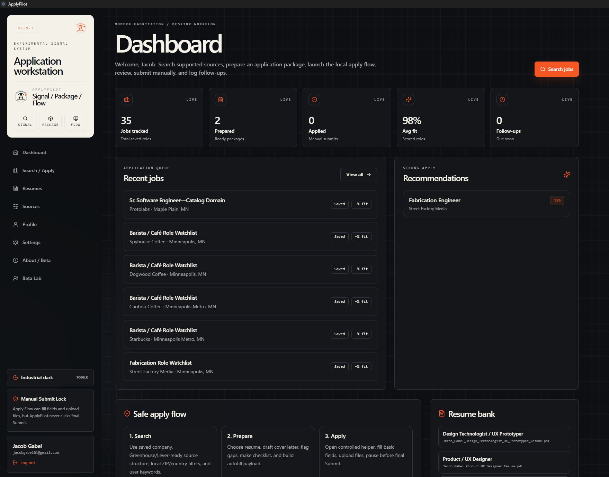
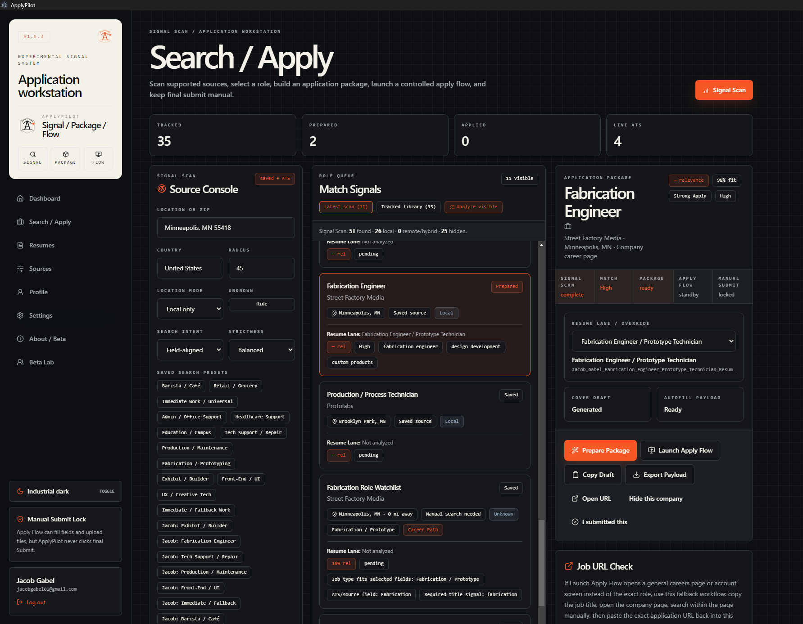
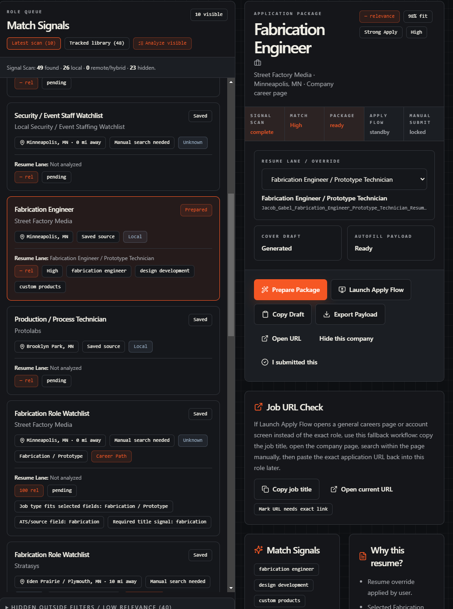
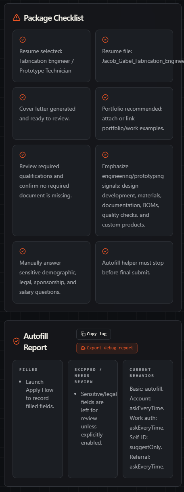
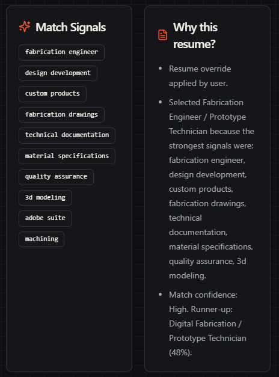
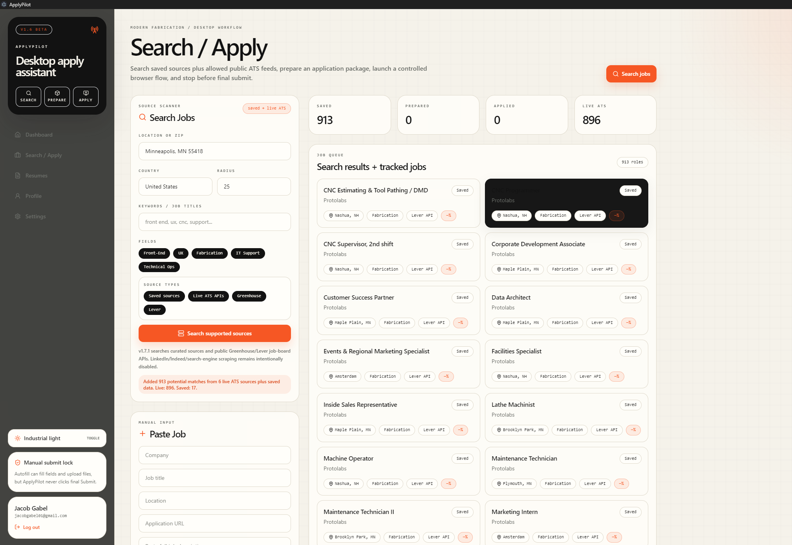
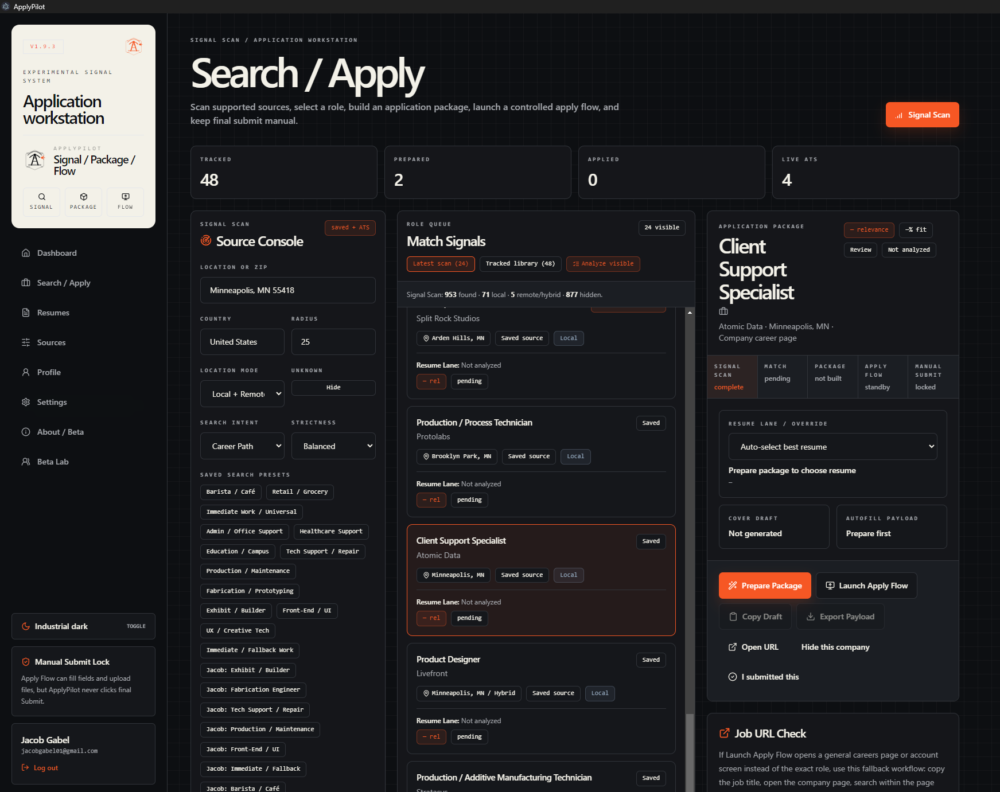

ApplyPilot
A job-application workflow app designed to help users organize roles, match postings to resume lanes, and understand why a specific resume version fits a specific opportunity.
ApplyPilot
A local-first job application workstation that helps users search roles, match postings to the right resume version, prepare application materials, and move through repetitive apply flows while keeping final submission under human control.
``` ```
Product direction, UX flow, interface design, front-end development, matching logic, and iterative QA.
Reduce job-search friction by helping users organize applications, choose better resume versions, and review each application before submission.
Working desktop prototype built with Next.js, Electron, TypeScript, local storage, and Playwright-assisted apply flows.
Problem
Applying to jobs often means juggling dozens of tabs, job boards, company portals, resume versions, cover letters, and application statuses. This becomes even harder for people applying across multiple career paths, where one resume does not fit every role.
Product idea
ApplyPilot turns the application process into a focused workstation: search for roles, review a ranked job queue, match each posting to a resume lane, prepare an application package, and launch the apply flow with a manual review step before submission.
Design direction
I designed the interface to feel like a technical control panel rather than a generic job board. The visual system uses dense job cards, clear status labels, source indicators, and transparent recommendation logic.
From scattered job search to guided application package.
```The core flow is built around helping the user make better decisions, not blindly automate applications. ApplyPilot can assist with repetitive steps, but the final submit action stays manual.
```



Resume lanes
ApplyPilot supports multiple resume directions instead of treating a job seeker as one fixed profile. My personal version includes lanes for UX/product design, front-end development, fabrication, IT support, retail/grocery, and barista/café roles.
Matching logic
The matcher compares role titles, descriptions, categories, and keyword signals against each resume lane. It prioritizes strong title and category matches while downranking unrelated roles, such as software jobs appearing in barista or retail searches.
Explanation layer
Instead of hiding the recommendation, the app shows why a resume was selected. This makes the system feel more trustworthy and gives the user a chance to override the recommendation.
Each card is designed as a decision point.
```The job card became the center of the product. Each card needs to answer: Is this role relevant? Where did it come from? Which resume fits? Why was it shown? What should I do next?


Testing
I tested ApplyPilot on my own job search first, using different resume versions for design, fabrication, tech support, retail, and café roles. I also created beta tester personas to check whether the product made sense for people outside my original career path.
Issues found
Early searches were too biased toward tech and fabrication roles. A keyword like “barista” still surfaced unrelated jobs because the source pool and matching logic were not universal enough.
Improvements
I added search modes, broader career categories, stronger negative matching, source labels, resume lanes for retail and barista roles, and clearer “why shown” explanations.
Short walkthrough of the application flow.
```The demo shows a user searching for a role, selecting a job card, reviewing the resume recommendation, preparing the application package, and stopping at the manual review step before submission.
```Outcome
ApplyPilot became a working desktop prototype that combines product design, front-end development, information architecture, local-first data, and workflow automation.
What I learned
The biggest lesson was that automation is only useful when the user trusts it. Transparent reasoning, clear controls, and manual review made the product stronger than a simple auto-apply tool.
Next steps
Next steps would include real beta testing, improved onboarding, signed installer packaging, stronger job-source integrations, resume parsing, and a cleaner public launch flow.